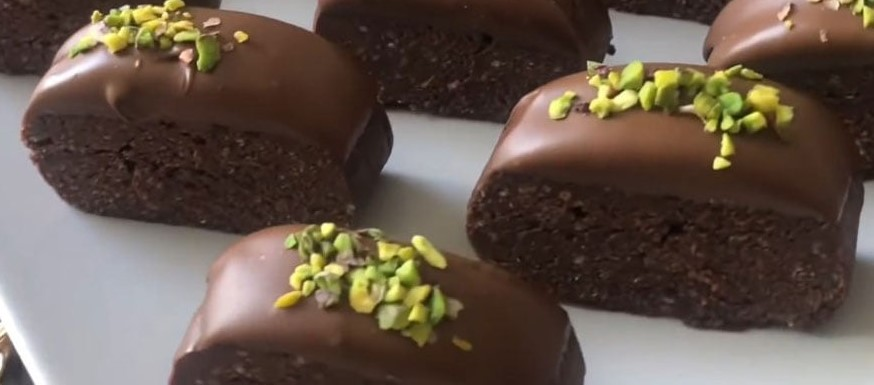

çikolatalı ve şam fıstıklı tadımlık lezzetler... Yalnızca 4 malzeme ile hazırlanan çikolata küpleri, renkli kağıtlarda veya kürdan batırılarak servis edilir. Özellikler kalabalık sofralarda yer verilen çikolata küpleri, doğum günü gibi özel etkinliklerde de sunulabilir
Tarif: Rukiye Beyza Sarıkaya

Çikolata Küpleri Tarifi İçin Malzemeler
- 350 gr bitter çikolata
- 150 ml krema
- 1 çorba kaşığı tereyağı
- 150 gr şamfıstık (Badem veya fındır da olabilir.)
Çikolata Küpleri Nasıl Yapılır?
- Bitter çikolatayı benmari usulü eritin.
- Eriyen çikolatanın üzerine krema ve tereyağını ekleyip iyice karıştırıp tencereyi bir tezgaha alın.
- Şamfıstıklarını havanda çok az döüp irili ufaklı parçalara bölün.
- Ufalanan fıstıkları çikolatalı karışıma ekleyip karıştırın.
- Hazırladığınız çökolatayı varsa alüminyum hazır bir kare tepsiye, yoksa kenarlarından taşarak yağlı kağıt yerleştirdiğiniz küçük bir tepsiye dökün
- Buzdolabında iki saat bekletin
- Çikolatayı kalıptan çıkartın. Kare parçalara bölün